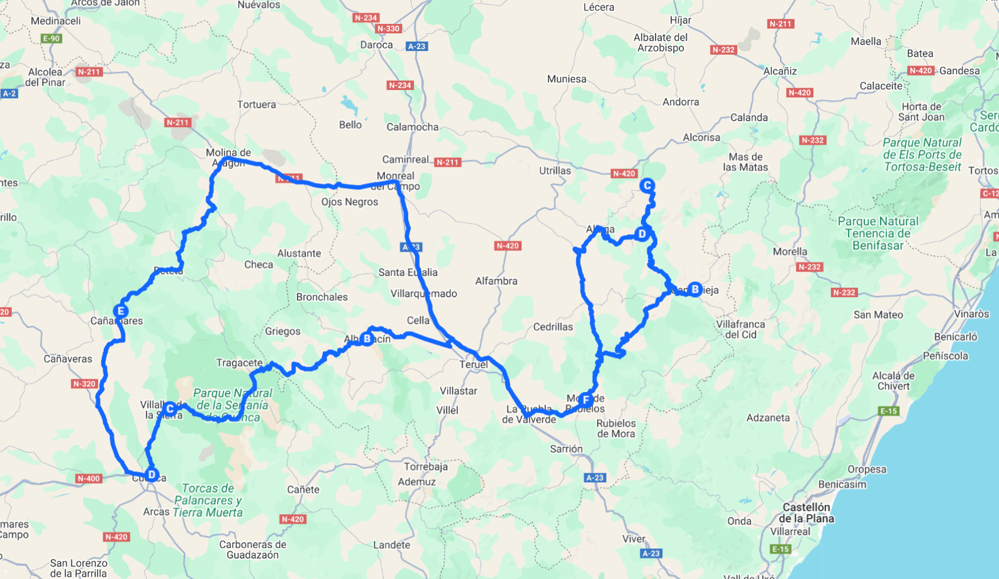

RUTA DEL SILENCIO ( THE SILENT ROUT )
Recorrer en moto las sierras de Teruel y Cuenca en La Ruta del Silencio es adentrarse en un universo de carreteras de montaña, paisajes que sorprenden a cada curva y pueblos que parecen suspendidos en el tiempo. Desde la salida en el propio Hotel, la ruta nos conduce por escenarios auténticos, donde la calma y el silencio son parte esencial del viaje.
El primer tramo nos lleva hacia Cantavieja, corazón del Maestrazgo, con su casco histórico medieval asomado al precipicio. Llegar hasta allí es un regalo para los amantes de las dos ruedas: curvas amplias, ascensos suaves y vistas abiertas sobre los valles. La ruta prosigue hacia Ejulve, entre montañas agrestes y pinares que perfuman el aire, hasta alcanzar los mágicos Túneles de Pitarque, donde la roca, el agua y la luz crean un entorno único para una parada inolvidable.
Tras volver al Hotel y reponer fuerzas, la aventura continúa al día siguiente hacia Albarracín, considerado uno de los pueblos más bellos de España. Sus murallas, sus calles empedradas y el color rojizo de sus casas convierten la visita en un viaje al pasado. Desde allí, la carretera se adentra en la Serranía de Cuenca hasta alcanzar la impresionante Ventana del Diablo, un mirador natural que se asoma a la profundidad del cañón del río Júcar. El trayecto culmina en las icónicas Casas Colgadas de Cuenca, un símbolo arquitectónico que parece desafiar la gravedad y que resume la esencia de esta ruta: belleza inesperada y carácter único.
El regreso al Hotel por carreteras secundarias y de montaña es un deleite final para quienes disfrutan de la conducción en plena naturaleza. Y ya en el último día, llega el momento de la despedida: un desayuno tranquilo, el eco de las anécdotas compartidas y la satisfacción de haber recorrido una de las rutas más auténticas y sorprendentes de la península.
✔️ TU VIAJE INCLUYE …
- Pack de Bienvenida
- Desayunos en Hotel y Cenas
- 4 días y 3 noches en Hoteles
- Aparcamiento para tu vehículo
- Cena en la primera noche en el Hotel
- Video reportaje del viaje
- Seguro de Protección Civil
- 2 Personas coordinan el grupo
- En las comidas y cenas solo se incluye ” Agua “
❌ TU VIAJE NO INCLUYE …
- Motocicleta para el viaje
- Cualquier concepto no especificado en el apartado ” Tu Viaje incluye …”
- Gasolina y peajes de Autopistas o Autovías
- No se cubren gastos derivados de conductas negligentes o irresponsables
- El seguro de protección civil incluido solo cubre a terceros y no reemplaza el seguro personal obligatorio
- Bebidas en ruta y por supuesto bebidas alcohólicas ni bebidas en minibar de hoteles
- Entradas a Monumentos
- Las propinas son voluntarias y a discreción del cliente
🗒️ TENER EN CUENTA …
- Cada uno se hará responsable de su propio equipaje
- Portar Herramientas necesarias para el mantenimiento de tu moto y un Kit de reparapinchazos
- Llevar los medicamentos personales y cualquier material médico necesario
- Pasaporte y visado en regla
- Permiso de circulación y tarjeta ITV, Carnet de Conducir

DIA 1
Quedada en Teruel
Entramos en modo “Familia Desubica 2”.
DIA 2
Teruel – CantaVieja – Ejulve
La Ruta del Silencio es un itinerario único para descubrir la belleza más salvaje del Maestrazgo turolense. El viaje comienza en el Hotel, desde donde se parte hacia Cantavieja, uno de los pueblos más pintorescos y con mayor historia de la comarca. Desde allí, la carretera serpentea hasta Ejulve, atravesando paisajes de gran tranquilidad que muestran la esencia más pura de Teruel. El camino continúa hacia los impresionantes Túneles de Pitarque, un enclave sorprendente donde la roca y la naturaleza se combinan en un entorno espectacular. Tras esta experiencia, la ruta regresa hacia el Hotel, completando un recorrido circular que, más allá de los kilómetros, regala al viajero silencio, calma y una conexión íntima con la naturaleza.
DIA 3
La Ruta Sorpresa
La ruta comienza en el Hotel, desde donde se toma rumbo a Albarracín, considerado uno de los pueblos más bonitos de España. Sus murallas, calles empedradas y casas rojizas transportan al viajero a otra época. El camino continúa por carreteras de montaña hacia la espectacular Ventana del Diablo, un mirador natural en la Serranía de Cuenca que ofrece vistas impresionantes sobre el cañón del río Júcar. Desde allí, la ruta sigue hasta las emblemáticas Casas Colgadas de Cuenca, un icono arquitectónico que se asoma al vacío sobre la hoz del río Huécar y que convierte la visita en una experiencia inolvidable. El regreso al Hotel se realiza nuevamente por carreteras de montaña, un tramo que regala al viajero paisajes de gran belleza, silencio y curvas que hacen del trayecto una aventura en sí misma.
DIA 4
Descanso y Despedida
En este último día, el ambiente invita a la calma: un desayuno tranquilo, el murmullo de la montaña y los recuerdos frescos de carreteras, paisajes y pueblos con encanto. El Hotel se convierte en ese refugio donde compartir anécdotas del viaje, revisar fotografías y saborear los últimos instantes antes de la despedida. Con una mezcla de nostalgia y satisfacción, llega el momento de marchar. Pero la sensación que queda es la de haber vivido una experiencia única, llena de silencio, naturaleza y emoción, que siempre invita a volver.